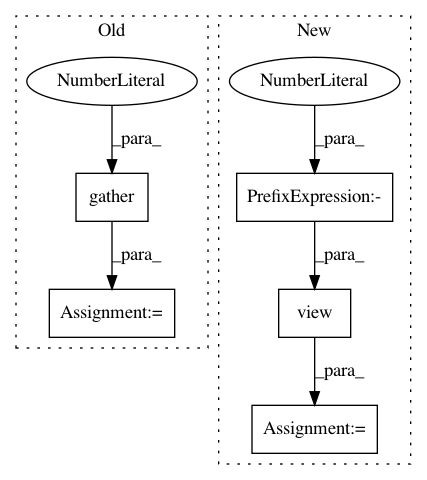

d1f6748120abc8b1b0bfccd2e6ccc4142ba127d0,allennlp/modules/conditional_random_field.py,ConditionalRandomField,_joint_likelihood,#ConditionalRandomField#Any#Any#Any#,238
Before Change
current_tag, next_tag = tags[i], tags[i+1]
// The scores for transitioning from current_tag to next_tag
transition_score = (
broadcast_transitions
// Choose the current_tag-th row for each input
.gather(1, current_tag.view(batch_size, 1, 1).expand(batch_size, 1, num_tags))
// Squeeze down to (batch_size, num_tags)
.squeeze(1)
// Then choose the next_tag-th column for each of those
.gather(1, next_tag.view(batch_size, 1))
// And squeeze down to (batch_size,)
.squeeze(1)
)
// The score for using current_tag
emit_score = logits[i].gather(1, current_tag.view(batch_size, 1)).squeeze(1)
After Change
current_tag, next_tag = tags[i], tags[i+1]
// The scores for transitioning from current_tag to next_tag
transition_score = self.transitions[current_tag.view(-1), next_tag.view(-1)]
// The score for using current_tag
emit_score = logits[i].gather(1, current_tag.view(batch_size, 1)).squeeze(1)
In pattern: SUPERPATTERN
Frequency: 3
Non-data size: 5
Instances
Project Name: allenai/allennlp
Commit Name: d1f6748120abc8b1b0bfccd2e6ccc4142ba127d0
Time: 2018-08-29
Author: lauraruis@Live.nl
File Name: allennlp/modules/conditional_random_field.py
Class Name: ConditionalRandomField
Method Name: _joint_likelihood
Project Name: rusty1s/pytorch_geometric
Commit Name: 51b53dcbab8ec7ab0b6e8a64284a919db2d2254a
Time: 2018-05-08
Author: matthias.fey@tu-dortmund.de
File Name: torch_geometric/transform/local_cartesian.py
Class Name: LocalCartesian
Method Name: __call__
Project Name: ixaxaar/pytorch-dnc
Commit Name: a6667bf98c59a7447a6bc55869459e83f5bdb603
Time: 2017-12-07
Author: root@ixaxaar.in
File Name: dnc/sparse_memory.py
Class Name: SparseMemory
Method Name: read_from_sparse_memory